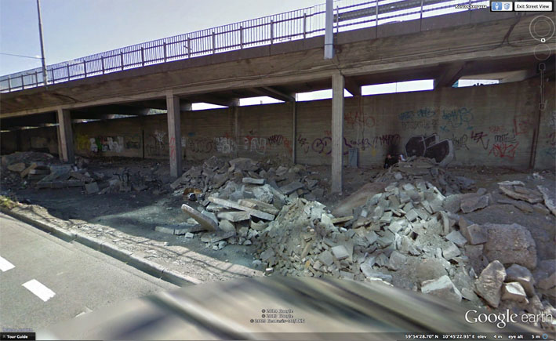

Buildings face away from the sun, and the “instant city” effect creates cold, empty streets that go nowhere, or have no organic relationship to the buildings that have been erected. Streets exist only to separate buildings. The main human functions are spending and excretion: no one visits for anything but shopping or sleeping in airlocked apartments after work. It’s pure Ballardian terrain, such as you might find in Super-Cannes, about a high-tech gated community where the architecture controls how the inhabitants think and behave. “Thousands of people live and work here,” Ballard writes, “without making a single decision about right and wrong. The moral order is engineered into their lives along with the speed limits and the security systems.” As in zombie urbanism, in Super-Cannes’s ultra-modern community “a lack of intimacy and neighbourliness” is replaced by an “invisible infrastructure that takes the place of traditional civic virtues”.

In the construction zone, on the green-and-blue facade of the PricewaterhouseCoopers building, I see fake perspective tricks worked into the building’s skin. This type of game is always a con, a way for architects to ignore the lived experience of a city by focusing attention on the bling of a building. Pure illusion. It does not reflect reality, only itself, like two mirrors distorting each other into infinity. In Melbourne, where I live, there is a similar development, the Docklands Precinct (or “Shocklands”, as I prefer it). Like the Barcode Project, it’s a redeveloped industrial waterfront area in the city centre. Like Barcode, its buildings are designed so close to each other they create narrow passages between them. Urbanists call such spaces SLOAP: Spaces Left Over After Planning. The Shocklands are hostile to urban life and human scale. The SLOAP there forms hyperactive wind tunnels that repel all street-level activity through constant wind motion and noise. Instead of designing sites for public interaction from the start, the SLOAP is what we get, and the architects can always claim: “There is your public space.”